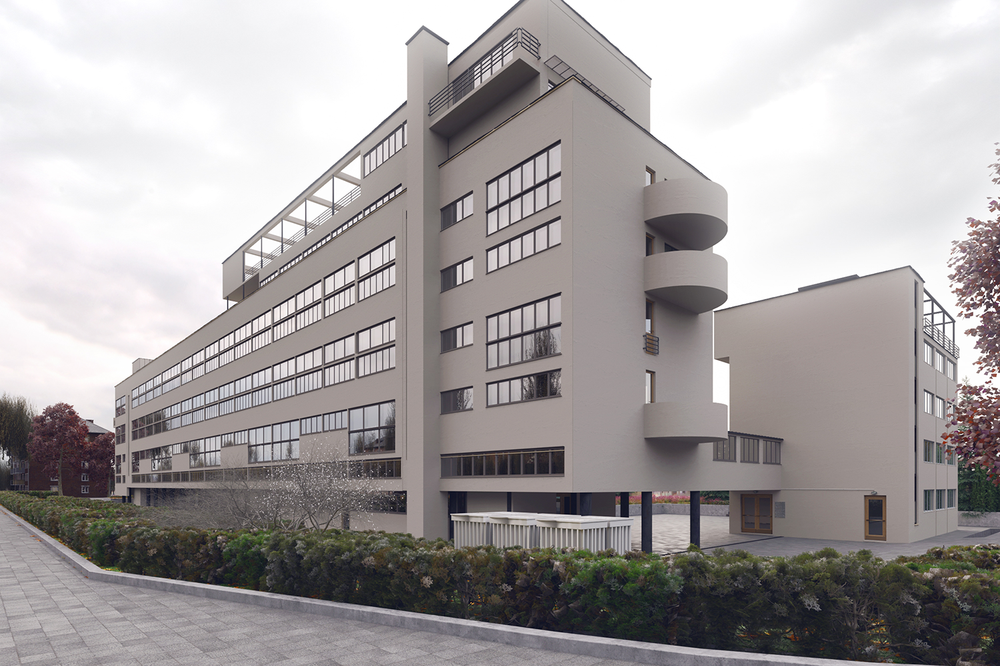

Жилой Дом Наркомфина — один из ключевых памятников жилой архитектуры конструктивизма, «опытный дом переходного типа». Построен в 1928—1930 годах по проекту архитекторов Моисея Гинзбурга, Игнатия Милиниса и инженера Сергея Прохорова[1] для работников Народного комиссариата финансов СССР (Наркомфина). Находится в Москве на Новинском бульваре по адресу дом № 25, корпус 1.
Долгое время находился в аварийном состоянии, был трижды включен в список «100 главных зданий мира, которым грозит уничтожение»[2]. В 2017 году началась реставрация по проекту мастерской Алексея Гинзбурга, внука М.Я. Гинзбурга.
Дом Наркомфина, или 2-й дом Совнаркома РСФСР, стал одним из экспериментальных домов, построенных по результатам теоретических исследований Секции типизации Стройкома РСФСР, работавшей в 1928-1929 годы под руководством М.Я. Гинзбурга. Работе секции предшествовал конкурс на «эскизный проект жилого дома трудящихся», проведенный журналом «Современная архитектура» (Гинзбург подал на конкурс проект «Коммунального дома А-1»), выставка проектов конкурса в 1927 году.[3], и строительство дома Госстраха на Малой Бронной (1926-1927, М.Я. Гинзбург и В.Н. Владимиров). И журнал, и конкурс, и работа Секции типизации были проектами ОСА (Объединения современных архитекторов).
Работа Секции типизации, подробно описанная М.Я. Гинзбургом в книге «Жилище»[4], началась с анализа типологии «дореволюционного «доходного дома» и состояла в достижении максимально эффективных параметров использования объема жилого пространства при сохранении его комфортности. Было разработано несколько типов квартир-ячеек, названных буквами от A до F. Результаты исследования секции М.Я. Гинзбург доложил на пленуме Стройкома РСФСР, где было принято постановление, рекомендовавшее несколько жилых ячеек к массовому строительству, а остальные — к опытно-показательному, начиная с 1928 года. Согласно этому постановлению было построено шесть «экспериментальных коммунальных домов переходного типа» в Москве, Свердловске и Саратове, причем в строительстве трех из них участвовал сам М.Я. Гинзбург. С.О. Хан-Магомедов называет дом Наркомата финансов самым интересным из этих шести домов [1].
Определенную роль в формулировании и решении проблемы создания жилого дома нового типа на примере дома Наркомата финансов сыграл Николай Милютин, известный как автор схем социалистического расселения и градостроительных концепций соцгорода[5], который в указанные годы (1924—1929) исполнял обязанности наркома финансов РСФСР и выступал в качестве заказчика жилого комплекса. По теории Милютина, отражавшей правительственную установку[6], «значительное повышение жизненного уровня рабочих и развитие обобществлённых форм обслуживания бытовых нужд трудящихся (общественное питание, ясли, детские сады, клубы и т.п.) постепенно уничтожают значение семьи как хозяйственного соединения. Этот процесс неизбежно приведёт, в конечном счёте, к полной переделке семейных форм общежития. <...> Задача раскрепощения женщины от мелкого домашнего хозяйства и вовлечение её в произодство заставляет нас ставить вопрос о всемерном содействии этому процессу»[7]. Задача реализации этих принципов и была поставлена перед авторами проекта. Согласно Екатерине Милютиной, это был дом «нового быта»[8].
Сметная стоимость строительства составила 10 млн. рублей[9]. Строительство жилого корпуса осуществлялось под наблюдением комиссии, возглавляемой Н.А. Милютиным. Коммунальный корпус и корпус прачечной строились без утвержденных чертежей[10].
Идеи, связанные с планировочной и объемной структурой, также как и с функциональным наполнением дома, изложены в книге М.Я. Гинзбурга «Жилище», где работе Секции типизации посвящена одна глава, а дому Наркомфина — три главы[11]; идеология дома также была озвучена М.Я. Гинзбургом на пленуме Стройкома[1]. Согласно М.Я. Гинзбургу, анализ типов жилья в доходном доме показывает, что его «экономический эффект» был более высоким, чем «массовое жилищное строительство Москвы первых лет после революции» (т.н. моссоветское строительство).
Работа Секции типизации шла по пути «урезывания и уплотнения обслуживающих площадей» взятой за прототип типологии доходного дома: вначале удалили вторые лестницы и комнаты домработниц, затем оптимизировали коридоры, передние, ванные комнаты и кухни, сохраняя объем и высоту жилых помещений и урезая как площадь, так и высоту подсобных. Приведенные в книге расчеты эффективности использования жилого пространства построены на рассмотрении отношения кубатуры к жилой площади квартир и параметра k (k=W/P, соотношение общей кубатуры здания к полезной площади жилых ячеек). М.Я. Гинзбург ссылается как на расчеты, так и на «опытную работу передовых архитекторов Запада».
Основной акцент архитекторы сделали на встроенную мебель и компактные сантехнические ячейки. Именно отсюда берёт начало практика совмещения ванной комнаты с туалетом, знакомая нескольким поколениям советских людей. «Они пытались сократить лишние движения обитателей квартир, а также считали необходимым предложить им питаться в общественных столовых, мыться в общественных банях, сдавать бельё в механические прачечные, читать и отдыхать в библиотеках и клубах»[12].
Дом Наркомата финансов нередко называют «домом-коммуной», что неверно: автор проекта М.Я. Гинзбург противопоставлял свой «дом переходного типа» (от «буржуазного» дома к «социалистической» коммуне, поскольку в нём не полностью уничтожалась семейная структура, как это предполагалось в домах-коммунах) практике домов-коммун и жестко критиковал последнюю:
«...конвейер, по которому течет здесь нормированная жизнь, напоминает прусскую казарму <...> Нет нужды доказывать абстрактную утопичность и ошибочную социальную сущность всех этих проектов. <...> Нельзя не заметить во всей этой программе механического процесса увеличения до астрономических размеров молекулярных элементов бытового уклада старой семьи»
В предложениях секции Стройкома нет ни слова о навязывании фиксированного распорядка дня, практикуемого в домах-коммунах, даже в проектах общежитий, ни об уничтожении традиционного семейного уклада. Цель «способствовать быстрейшему безболезненному переходу к более высоким формам хозяйства» авторами дома Наркомфина также озвучивалась: именно для этого был запланирован развитый коммунальный блок с функциями общественного питания, стирки, уборки и присмотра за детьми — также как и минимальный размер кухонь в квартирах[14]. Между тем М.Я. Гинзбург подчеркивает:«мы сочли совершенно необходимым создание ряда моментов, стимулирующих переход на более высокую форму социально-бытового уклада, но не декретирующих этот переход»
Рассматривая дом Наркомфина как опытный, М.Я. Гинзбург не считал его типовым и настаивал на том, что создание типовых проектов жилых домов — путь неправильный, ведущий к «однообразию жилой застройки». Гинзбург считал важной «максимальную гибкость» стандартов и разработку таких стандартных элементов, «которые можно было бы всячески комбинировать <...> варьировать типы жилья, используя одни и те же стандартные элементы"
Под строительство дома для работников Наркомата финансов в апреле 1929 года была отведена территория двух усадеб, выходивших на Новинский бульвар — так называемый "Шаляпинский" парк [17], зеленое пространство за рядом домов XIX в. вдоль Садового кольца, в одном из которых в 1910-1922 годы жил Ф.И. Шаляпин. Территория полого спускается к Пресненскому пруду, который к 1925 году был забран на этом отрезке в трубу[5]. Планы застройки предусматривали полный снос существующих домов и дворов, включая флигели и двор дома Шаляпина, но в итоге ни одно строение при строительстве дома Наркомфина не снесли. Под домом течет река Синичка, заключенная в трубу
В проектной документации дом именовался 2-м домом СНК. Согласно проекту, комплекс должен был состоять из четырех корпусов:
Также планировалось, что рядом с домом Наркомфина будет построен второй жилой дом с большими квартирами — ячейками типа К или D. Не реализован.
Три основных объема: жилого дома, коммунального корпуса и непостроенного детского сада, планировались как ритмически сбалансированный ансамбль разновеликих построек. Их уравновешивал корпус прачечной, перед которым со стороны Новинского бульвара планировалась организация квадратной площадки, композиционно связывающей этот корпус с городом. Жилой дом и корпус прачечной были частично подняты на колоннах, что освобождало пространство первого этажа (высотой 2,5 м) для прохода. По замыслу архитекторов, пройдя под корпусом прачечной через «парадный двор» перед входом с Новинского бульвара, по диагональной аллее можно было попасть в общественную зону комплекса или по другой аллее через жилой корпус в уровне открытого первого этажа — в парк за домом, где была организована своеобразная видовая площадка[
Архитектура жилого корпуса была для конца 1920-х годов необычна и впечатляюща, особенно если учесть его старомосковское окружение[Комм. 2]. Жители ближайших районов прозвали его «домом-кораблем» («домом-пароходом» по Е. Милютиной) — впрочем, данный эпитет применяется ко многим модернистским зданиям. Авторам проекта Гинзбургу и Милинису удалось скомпоновать жилые ячейки в единый корпус настолько необычно, что это заинтересовало даже самого Ле Корбюзье, побывавшего в Доме Наркомфина и посетившего лично квартиру Николая Милютина
В пояснительной записке к проекту М.Я. Гинзбург так объясняет появление открытого первого этажа:
«Ввиду неровности участка, вызывающего в подобных случаях устройство большой поверхности цоколя, в настоящем случае дом поднят в большей своей части на высоту 2,5 метров на отдельных столбах, что является более экономичным и, кроме того, сохраняет нетронутой площадь парка»
В книге «Жилище» сказано лаконичнее: «Весь дом расположен в парке» [19]. Имеются в виду остатки "Шаляпинского" парка (см. выше), сохранившиеся части усадебных садов. Кроме того в 1937 году в парк вокруг дома Наркомфина пересадили деревья с реконструируемого Садового кольца, которое было залито асфальтом и снесена вся линия садов. Как следствие, одним из аргументов М.Я. Гинзбурга в пользу открытого первого этажа и «дома на ножках» стало «не разрезать домом территории парка»
Другие аргументы М.Я. Гинзурга в пользу открытого первого этажа на опорах:
Жилой корпус — шестиэтажное здание-пластина длиной 85 м и высотой 17 м, вытянуто с юга на север, вдоль восточного фасада сгруппированы спальни и коридоры, вдоль западного гостиные, соответственно спальни получают утреннее солнце, гостиные вечернее. Ближе к торцам расположены две лестничные клетки, связанные между собой и с квартирами двумя широкими коридорами (4 м в ширину и 2,3 м в высоту), на втором и пятом этажах. Коридоры М.Я. Гинзбург называет горзизонтальными артериями и противопоставляет их вертикальным лестницам: коридоры должны были упростить жителям квартир связь с помещениями коммунальных сервисов. С другой стороны, архитектор трактовал коридоры как общественные пространства («место общественного пребывания»
Секция типизации Стройкома РСФСР разработала пять основных типов жилых ячеек: A, B, C, D и F. Самая крупная из них, ячейка A, подразумевала трех- и двухкомнатные квартиры, B — только двухкомнатные. Минимальной была ячейка F, рассчитанная на жилую (но не общую) площадь 25-30 м².
В доме Наркомфина использованы три типа квартир - по Гинзбургу, «Жилище» (1934) - в реальности около десятка типов квартир–ячеек. Второй и третий этажи заняли восемь квартир типа K - по Гинзбургу - в реальности девять квартир типа K, предназначенные для больших семей. На трех верхних этажах, с четвертого по шестой, разместились 32 малометражные квартиры типа F - по Гинзбургу, «Жилище» (1934) - в реальности 24 малометражные квартиры типа F, рассчитанные на одного человека либо на семейную пару без детей. В торцах дома, отделенных от центральной части лестничными клетками, использованы ячейки 2F — сдвоенные ячейки F. На уровне плоской крыши, располагались комнат типа общежития, где были реализованы опубликованные Николаем Милютиным в «Соцгороде» жилые ячейки на одного человека. Часть из них — на одного человека, часть — на двух, площадью соответственно 9 и 15 м², высотой 2,6 м, объединенные общим санузлом и душем между каждыми двумя комнатами.
В ячейках K площадь гостиной, или «жилой комнаты» – 25 м², ее высота 5 м. В части, разделенной на два яруса высотой по 2,3 м, внизу расположены: соединенная с коридором терраса, передняя и кухня площадью 4,3 м², вверху две спальни 19,88 и 12,1 м² с ванной и туалетом (совмещёнными). Жилая площадь ячеек K 57-60 м², общая площадь 82-83 м², (100 м² квартира № 11). С момента заселения дома этот тип квартир предназначался для наиболее элитных семей по причине их вместительности, удобства и большей "жилплощади"
Ячейки F - все квартиры двухэтажные с входами из одного коридора пятого этажа. Квартиры имели две планировки: либо с лестницей от входа наверх (в двухэтажную гостиную со стеклянным окном во всю стену) и опять наверх (в спальную нишу), либо с длинной лестницей вниз, в такую же гостиную и спальную нишу, расположенные на одном уровне. Таким образом каждая квартира состоит из двух частей. Одна часть её имеет высоту 3,6 м (гостиная), другая — 2,3 м (спальная ниша). При выбранной планировке гостиная и спальная ниша открыты друг другу, визуально и пространственно, чем обеспечивалось двухстороннее освещение и проветривание. Единственными закрытыми пространствами квартиры являлись душевая кабина с умывальником и туалет. При необходимости визуальное и физическое разделение спальной ниши и гостиной достигалось карнизом с занавеской. Передняя и туалет расположены непосредственно у входа в квартиру. В малометражных квартирах F нет кухонь. Отсутствие кухонь, по Виктору Бачли, служит предельным выражением социализированной жизни и нового быта. Жилая комната оборудована небольшим «кухонным элементом» для подогрева пищи. Общая площадь ячеек F 35-36 м².
Появление ячеек 2F в торцах здания вызвано необходимостью рациональной компоновки объемов квартир внутри дома; оно позволило, прежде всего, ограничиться двумя коридорами. Ячейки 2F в целом дублируют структуру ячеек F. В них две гостиных высотой 3,6 м, а также столовая, передняя, ванна, туалет и кухня высотой 2,3 м. М.Я. Гинзбург называет ячейки 2F «в социально-бытовом отношении <...> обычными квартирами с более рациональным распределением высот, а потому и с более интересным пространственным решением», однако ничего не говорит ни о количестве ячеек 2F в доме, их площади, и количестве комнат в них. Виктор Бачли приводит следующие данные[21]. Вдоль каждой лестничной клетки расположены ячейки 2F двух типов: двухуровневые (три квартиры на 6-м этаже), остальные одноуровневые (три квартиры на 4-м этаже). Все комнаты ячеек, по аналогии с дореволюционными квартирами визуально и физически отделены друг от друга стенами и дверными проёмами. Вдоль южной лестничной клетки находятся две «сочленённые ячейки К» (англ. articulated K-units - определение Бачли). Этот тип квартир никогда не упоминался ни в рекомендациях Стройкома РСФСР, ни в работах Гинзбурга, его учеников и комментаторов. Отличается от ячеек К существенно большей площадью, наличием дополнительного туалета и столовой на нижнем уровне, а также большими полукруглыми балконами. Елена Овсянникова (2015) описывает этот тип квартир следующим образом: «В торцах здания, с севера и юга, построены более просторные, индивидуально спланированные квартиры с балконами. В одной из таких квартир находилась мастерская Гинзбурга»[22]. Общая площадь торцевых ячеек 2F составляла от 77 (кв. № 14) до 114 м² (кв. №18, пять комнат[23]).
Обследование дома Наркомфина, проведенное в 1994 году профессором МАрхИ Еленой Овсянниковой и швейцарскими студентами из Женевы, которыми руководил Жан-Клод Люди, показало, что его внутренняя структура оказалась ещё сложнее, чем было заявлено в проекте. Нестандартные квартиры, как оказалось, были на каждом этаже, хотя большинство их — типовые. Общее число вариантов жилых ячеек могло доходить до одиннадцати (включая помещение для консьержа, «студию» на верхнем этаже, общежитие на кровле и пентхаус самого Милютина). Характерно, что в конце коридора пятого этажа находилась общая кухня, организованная уже в 1940-е годы, а из самого коридора был доступ в чуланы для хранения вещей, не всегда помещавшихся в ячейки «F».
Корпус общественного обслуживания, названный авторами «коммунальным», представлял собой замкнутый , почти кубический объём со стороной около 10 м. С жилым корпусом его связывает переход на уровне второго этажа. Четыре этажа коммунального корпуса объединены двусветными помещениями высотой 5 м, обращенными на север, во двор комплекса, и закрытыми сплошным витражом 4-этажной высоты. В нижней части первоначально планировался спортивный центр, в верхней общественная столовая с летним кафе на крыше и библиотека. Лестничная клетка в западной части связывала все этажи коммунального корпуса между собой и с переходом, ведущим к дому. По словам М.Я. Гинзбурга, двигаясь по лестнице и внутри помещений корпуса, «зритель получает непрерывно меняющееся пространственное ощущение»
Фасадное решение дома лаконично конструктивизма: ленточные окна, характернейший прием 1920-х годов, подчеркивают горизонталь, гладкие стены украшены лишь элементами, обусловленными функционально: полосами цветочных ящиков, выемкой террасы во втором этаже. Структура фасадов отражает внутреннее устройство квартир, следуя принципу модернистской архитектуры изнутри-наружу, поэтому на восточной стене преобладают ленты, а в нижней части западной стены окна гостиных сливаются в крупные пятна остекления, чередуясь с небольшими окнами кухонь. Северный торцевой фасад лишен окон и оживлен лишь выступом балкона, хорошо освещенный южный решен пластичнее -- оживлен тремя выступами полукруглых балконов, образуя один из хрестоматийных видов дома. Полукруглые балконы размещены один над другим на уровне третьего, пятого и шестого этажей. Тему лаконичных объемов с большими плоскостями стекла подхватывает и коммунальный корпус.
Дом был возведен с применением новинок тогдашней строительной индустрии, за конструктивные эксперименты отвечал инженер Сергей Львович Прохоров и возглавляемая им компания Технобетон. Несущая конструкция -- железобетонный каркас.
Дом был возведен с применением новинок тогдашней строительной индустрии, за конструктивные эксперименты отвечал инженер Сергей Львович Прохоров и возглавляемая им компания Технобетон. Несущая конструкция -- железобетонный каркас.
Важным нововведением С.Л. Прохорова стало использование блоков «холодного» бетонного камня с двумя крупными отверстиями: для междуэтажных перекрытий и внутри вертикальных стен между квартирами и в ограждении лестничных клеток. Пустоты блоков использовали для прокладки канализационных, водосточных и вентиляционных каналов, размещенных внутри здания, нередко в довольно сложной конфигурации, поскольку требовалось провести все коммуникации между объемами квартир разной типологии. В составе перекрытий ряды блоков перемежали с армированным бетоном, экономя бетон и даже деревянную опалубку, поскольку в доски не требовалось забивать гвозди:
«Холодные» блоки с двумя отверстиями М.Я. Гинзбург называет «обычными для немецкого бетонного строительства» (действительно, они известны, в частности, в практике Баухауса). С.Л. Прохоров организовал производство похожих блоков в крупными отверстиями прямо на стройплощадке дома Наркомфина с использованием станков для производства блоков «Крестьянин», куда подкладывались деревянные вкладыши для изготовления отверстий[28]. Впоследствии они получили название «блоков Прохорова».
Пол в квартирах был выполнен из 2-сантиметрового двухслойного ксилолита (древесный камень, в основе стружка, типологически материал подобен ДСП). Ксилолит укладывали по бетонной плите основания. Во внутриквартирных перегородках использовался фибролит и блоки «Крестьянин» в 1/2 блока; толщина перегородок 5 см (звукоизоляция в современном понимании в доме Наркомфина отсутствовала; ее планируется добавить при реставрации дома в 2017-2019 гг.[29]). Для утепления железобетонных балок в местах их выхода на фасад (т.е. достаточно редко) использовался т.н. камышит, теплоизоляционный материал из сухой спрессованной травы.
Плоская гольццементная кровля дома утеплена шлаком и снабжена водостоками, проведенными в теле дома. Технологические решения кровли с теплоизоляцией «торфоплитами» из прессованного торфа и гидроизоляцией битумом следовали схеме, разработанной ведущим германским специалистом по плоским крышам Эрнстом Маем.
Архитекторы дома Наркомфина уделяли большое внимание освещенности внутренних пространств. «Лучшей системой», зрительно расширяющей пространство, М.Я. Гинзбург называет «горизонтальную световую ленту, подтянутую к потолку». При этом по словам архитектора «горизонтальная лента дает значительно более равномерную освещенность». Расчеты коснулись и оптимальных отрезков стены выше и ниже окна: в обоих случаях оптимальной названа высота простенка 1 м сверху или снизу. Идеальным же решением признано сплошное остекление, апробированное в доме Наркомфина на примере витража коммунального корпуса
Одно из нововведений дома Наркомфина окна, скользящие по направляющим, сходные с изобретенными Ле Корбюзье и Пьером Жаннере. Они были доработаны с учетом российского климата. Ленточные окна включали два элемента: подвижные и неподвижные. Неподвижные с железобетонными рамами, подвижные — с дубовыми, скользящими на роликах по направляющему рельсу и прижимающимися к бетону рукояткой с эксцентриком[31]. Места прижима в окне с деревянной рамой были обиты брезентом и войлоком. М.Я. Гинзбург считает ошибкой изготовление неподвижных бетонных рам и называет пять достоинств сдвижных оконных рам:
Эксперименты с цветом в доме Наркомфина стали продолжением опытов, начатых М.Я. Гинзбургом в архитектурной комнате бывшего МВТУ (сейчас МГТУ им. Н.Э. Баумана) и признанных автором не очень удачными: "длительное пребывание в этой комнате утомляло". Работой по подбору цветовых решений квартир дома Наркомфина руководил художник из Баухауса профессор Хиннерк Шепер [32]. Стены в квартирах не оклеивали обоями, а гладко окрашивали — теплые гаммы колеров для одних квартир и холодные для других. В квартирах теплой гаммы для потолка была выбрана светлая охра, для стен лимонно-желтый. В холодной гамме для потолка использовали голубой оттенок брауншвейг, стены же были голубоватого и зеленоватого оттенков[Комм. 3]. В обоих случаях была выбрана менее интенсивная гамма, чем в опыте с комнатой МВТУ.
"Опыты показали, что теплая гамма пространственно ограничивает объем: холодная же, наоборот, как бы расширяет помещение", - пишет М.Я. Гинзбург. Вывод, сделанный архитекторами из экспериментальной раскраски интерьеров - следует быть чрезвычайно осторожным в выборе цвета, а яркий цвет уместен на потолке, куда мы смотрим не так часто: поэтому основной, более яркий тон в окраске квартир дома Наркомфина применялся именно на потолках[33].
Цвет также был использован для облегчения навигации: так, расположенные двери верхних и нижних ячеек F были для различения покрашены в черный и белый цвет. Потолки лестничных клеток и коридоров также были покрашены в разные цвета: оранжевый, брауншвейг, зеленая земля, кобальт, вермильон, зеленый веронез[источник не указан 78 дней], - помогая жителям сориентироваться, в какой части дома они находятся.
Первым критиком здания дома Наркомфина был сам М.Я. Гинзбург — взгляд на историю строительства дома как на эксперимент предполагал его критическую оценку в книге "Жилище", вышедшей в 1934 году.
Дому Наркомфина посвящено большое количество публикаций, как в российских, так и в зарубежных источниках. В западных источниках описания дома Наркомфина нередко сопровождаются определениями «утопия» и «утопический» (англ. utopian housing project)[34].[Комм. 4]. В советских публикациях авторы старались избегать такой трактовки, привычно используя лексику типа «эксперимент», «экспериментальный», «переходного типа» и т. п., не акцентируя внимание на его результатах.[Комм. 5].
Объектом критики, в первую очередь со стороны качества использованных строительных материалов, стали несущие стены, так как жилой корпус ни разу не ремонтировали за все почти 90 лет его существования. Штукатурка фасадов осыпалась, а стены из кустарно выполненных цементных и шлаковых блоков, сделанных прямо на стройке, разрушались. Наполнителями в цементном растворе служили разные подручные материалы, в том числе металлургический шлак, солома, камыш.
Каркасная конструкция дома на ножках весьма затруднила устройство в нём вертикальных коммуникаций, не говоря о промерзании нижнего жилого этажа. Канализационные стояки пришлось утеплять и пропускать в нестандартных, специально утолщенных колоннах, что первоначально не учитывалось в эскизном архитектурном решении. Ряд проблем вызвала и плоская кровля и связанные с ней протечки. Исполнение такой кровли требует особой тщательности и качественных материалов, которые в период строительства можно было достать только благодаря инициативе заказчика ранга Милютина. Такая кровля требует постоянного ухода — прочистки загрязненных или замерзших внутренних водостоков, починки покрытия, регулярного сбрасывания снега.
Использованный во внутренней отделке дома «камышит» оказался плохим звукоизолирующим материалом, в частности, в качестве внутренних перегородок между первоначально «спальными комнатами», оказавшихся заселённых различными семьями. По этому поводу было высказано много критических замечаний. К моменту окончания войны вентиляционные шахты оказались забитыми, вытяжная вентиляция повсеместно не работала.
Эксперимент с устройством раздвижных горизонтальных окон «не достиг цели и вызвал нарекания жильцов»[31]. Ленточные окна шириной во всю стену не вполне отвечали реалиям московского климата. Места прижима в окне с деревянной рамой были обиты брезентом и войлоком. Через пару десятилетий уплотнения износились, к тому же бетонные рамы стали осыпаться, обнажая металлическую арматуру, сдвижные элементы окон заклинивали и в зимнее время пропускали холодный воздух.
Оборудование квартир не удалось сделать идеальным, ни стилистически, ни функционально. Например, там, где удавалось поставить ванну, то это были громоздкие дореволюционные чугунные изделия, занимавшие слишком много места в габаритах первоначально запланированных душевых кабин. Солидная по площади ванная комната была только в квартире Милютина
С бытовой стороны Дом Наркомфина также вызывал множество нареканий. Основой явилось нарушение заложенного в проекте принципа заселения типовых ячеек (квартир), связанного с тяжелейшим жилищным кризисом в СССР. В Доме Наркомфина в 1940-е…1970-е годы были распространены примеры квартир-коммуналок, когда одной из семей приходилось жить в общей комнате, а другой — в спальне. При этом минимальные размеры кухонь и санузлов приводили к скандалам и, в результате, к резкой критике архитектуры авангарда и системы в целом. По-видимому, благополучными исключениями являлись квартиры бывших наркомов Н. Милютина и Н. Семашко.
Не выдержал Дом Наркомфина и конкуренцию с традиционными в отношении строительных технологий домами, выстроенными по инициативе Моссовета. Если в Доме Наркомфина легкие бетонные блоки разрушались, то толстые и непромерзаемые кирпичные стены домов Моссовета до сих пор отличаются хорошей звукоизоляцией всех помещений и сохраняют микроклимат в квартирах[18].
В итоге Дом Наркомфина так и не стал «домом-коммуной переходного типа» — к середине 1930-х годов утопические проекты первых лет советской власти сошли на нет, да и сами жильцы отказались от этой идеи[35].
По словам современного автора «довольно быстро выяснилось, что номенклатурная элита не готова жить по утопическим заветам Гинзбурга»[36]. По данным Виктора Бачли, в предвоенные годы почти половина домохозяйств (семей) дома Наркомфина содержали домработницу и не показывали желания социализироваться[
Идущую вдоль нижнего коридора галерею, предназначенную для встреч и общения, быстро превратили в места для сушки белья, позднее в индивидуальные кладовки; терраса с садом на крыше так и не была достроена, а общей столовой почти никто не пользовался. Жильцы с удовольствием покупали в столовой готовые блюда, однако предпочитали забирать их с собой в квартиры, а не питаться вместе[Комм. 6]. В таком виде коммунальный корпус существовал недолго. Через некоторое время общественное питание перестало удовлетворять основную массу жильцов, и кухня стала нерентабельной. Вслед за этим изменилось и назначение двухсветных залов. Они были приспособлены вначале под типографию, а в дальнейшем — под конструкторское бюро.
Успешно функционировали только два коммунальных хозяйственно-бытовых учреждения: прачечная и детский сад (в коммунальном корпусе). Но и они во время войны были закрыты.
Авторы монографии советского периода (1986), посвященной Дому Наркомфина, подводя итоги, писали, что «эксперимент с организацией новых форм ведения социально-бытового хозяйства для начала 1930-х годов был преждевременным и оказался несостоятельным»[31].
Английский историк материальной культуры Виктор Бачли в своей работе 1999 года писал более откровенно, что «утопизм и стремление к реформированию повседневной жизни, положенные в основу проекта дома Наркомфина, впали в немилость практически сразу по его завершении. С началом пятилетки и консолидации власти Сталиным заложенные в проект идеи коллективизма и феминизма были отвергнуты как левацкие и троцкистские»[34].
В 1933—1935 году на территории, первоначально предназначавшейся для детского сада и яслей жилого комплекса (вдоль его южной границы), по проекту архитектора Сергея Леонтовича был построен жилой дом работников Совнаркома (дом 25, корп. 10)[38], композиционно никак не связанный с комплексом. Совет народных комиссаров отдал предпочтение архитектурному проекту Леонтовича, как более отвечающего политической обстановке, и построил украшенное орнаментом здание в стиле сталинского классицизма[39].
В итоге сохранение усадебных построек по линии Новинского бульвара, а также строительство в границах первоначально отведённого участка ещё одного жилого дома, чужеродного комплексу, не позволило полностью осуществить авторский замысел по организации пространства. К 1934 году комплекс начал утрачивать композиционную целостность. Изменения коснулись парка между жилым и общественным корпусами и прачечной. Была утрачена диагональная дорожка, пересажены деревья с Новинского бульвара, что нарушило визуальные связи элементов композиции. Застройка «пространства первого этажа» прачечной исключила возможность прохода через ее объем на территорию комплекса.
Не были построены: детский сад и ясли, жилой корпус второй очереди (авторы проекта архитекторы М.Я. Гинзбург и Г.А. Зундблат) и комплекс служебного дворика, объединяющего гараж для жильцов, прачечную, котельную. Сооружена была лишь прачечная, использовавшаяся жильцами лишь в первые годы[31], а после войны перешедшая в ведомственное подчинение.
К началу 1940-х годов участок вдоль северной границы территории жилого комплекса (за дворовым фасадом корпуса прачечной во всю его длину, и в глубину двора вплоть до дома Наркомфина с его восточной, северной и частично с западной сторон) был выделен под ведомственный гараж СНК РСФСР, позднее Совмина РСФСР[40], его территория площадью около гектара была покрыта асфальтом, гараж обнесён забором, а парк за домом с видом на Москва-реку был ликвидирован. Гараж просуществовал до 1965 года. В начале 1950-х годов в непосредственной близости от дома Наркомфина было возведена одна из сталинских высоток - жилой дом на Кудринской площади, ставшая архитектурной доминантой Краснопресненского района.
С середины 1930-х годов дом № 25, корп. 1 стоял на балансе Совета народных комиссаров, с 1946 года — Совета Министров РСФСР вплоть до конца 1950-х годов. В 1961 году снят с баланса Совета Министров РСФСР и передан в общегородское подчинение (в ЖЭК).
В процессе строительства в выходящем на кровлю объеме, предназначенном для вентиляционной камеры, разместилась двухуровневая квартира-«пентхаус» министра финансов Николая Милютина, спроектированная им для своей семьи с согласия М. Гинзбурга[41][Комм. 7]. Милютин живо интересовался вопросами дизайна интерьера своей квартиры, лично участвовал в подборе колеров для окраски стен.
Поскольку отдельностоящее здание детского сада и яслей не было построено, значительную часть коммунального корпуса отдали под детский сад. Из предусмотренных замыслом общественных функций этого корпуса в 1930-е годы в полную силу заработала только кухня. Столовая работала в пол-силы, поскольку жильцы предпочитали брать обеды на дом[42]. Через некоторое время общественное питание перестало удовлетворять основную массу жильцов, и кухня стала нерентабельной. Вслед за этим изменилось и назначение двухсветных залов. Они были приспособлены вначале под типографию, а в дальнейшем — под конструкторское бюро. Успешно функционировали только два коммунальных хозяйственно-бытовых учреждения: прачечная и детский сад (в коммунальном корпусе). Но и они во время войны были закрыты.
Идущую вдоль нижнего коридора галерею, предназначенную для встреч и общения, жильцы коммунальных квартир постепенно превратили в индивидуальные кладовки. В 1930-е годы северная торцевая часть галереи второго этажа заложена с образованием дополнительного помещения. В ячейках К - в процессе превращения их в коммунальные, либо при расширении одной семьи - парапеты галерей верхних уровней также были заложены в 1930-е и 1940-е годы, на узких площадках галерей образованы дополнительные кухни.[Комм. 8]. Совмещённые санузлы квартир типов К и 2F повсеместно были переоборудованы в раздельные установкой дополнительных перегородок за счёт уменьшении площади ванных комнат[43].
Терраса с садом на крыше не была достроена, хотя при исследованиях 2017 года на кровле обнаружили всю необходимую инфраструктуру для озеленения[какую?].
К 1936 году ввиду острого дефицита жилья пролёты между столбами-опорами первого этажа были застроены, здесь были размещены дополнительные шесть квартир (сверх 50-ти проектных) с частичным заглублением их в цоколь, в общий тамбур которых (на две квартиры) с улицы можно было попасть спуском по четырём ступенькам вниз. По планировке 3-х комнатные квартиры принципиально отличалась от имевшихся в доме. Включали три жилые комнаты, и отдельные кухню, ванную комнату и туалет. Бачли называет их сталинскими квартирами.
После войны в северной части цокольного этажа было организовано служебное общежитие (до войны это была отдельная квартира на одну семью, глава которой, научный консультант СНК, был репрессирован в 1937 году, а на освободившуюся площадь вселились три семьи[44]), третье в доме. Служебное помещение было также пристроено к южному фасаду, надстроен коммунальный корпус. В 1959 году со стороны западного фасада дома пристроена лифтовая шахта, соединённая переходами с основной лестницей и примыкающая вплотную к вытяжной трубе котельной.
Практически все трёхкомнатные квартиры нижних этажей превратились в коммунальные, к чему не были приспособлены; минимальные размеры кухонь и санузлов приводили к скандалам. Минимальная ширина лестницы с двумя поворотами, соединяющей оба яруса трёхкомнатных квартир, не позволяла поднимать по ней габаритную мебель, набиравшую популярность к началу 1960-х годов. По ней было невозможно спустить с верхнего яруса гроб с телом умершего, и покойника приходилось выносить на руках.
Как пишет в своих воспоминаниях о Доме Наркомфина Екатерина Милютина, «квартиры для одиночек заселили семьями, семейные сделали коммунальными. Вместо закрытой столовой (коммунальный корпус) на пятом этаже сделали коммунальную кухню с рядами плит и корыт. Детский сад закрыли, коммунальный корпус превратился в типографию. Прачечная сохранилась, но она постепенно перестала обслуживать жильцов. В конце концов дом передали в ЖЭК, покрасили немыслимой жёлтой краской и перестали ремонтировать»[18]. По состоянию на начало 1960-х годов в доме насчитывалось 58 квартир со 178 жителями[45].
За все годы существования дома не было выполнено ни одного капитального ремонта. В конце 1970-х власти Москвы собирались сделать капремонт, для чего выселили тридцать квартир, но так и не успели[46]. Процесс расселения возобновился в конце 1980-х годов, однако по состоянию на начало 2008 года там проживало около 15 семей (в реальности одиночек)[47]. Отсутствие капитального ремонта привели к тому, что дом очень сильно обветшал, его состояние долгое время оценивалось экспертами как «критическое»[48][49]. В 2006 году дом Наркомфина был включён в «World monuments watch list of 100 most endangered sites» — Список памятников мировой культуры, находящихся под угрозой исчезновения[50]. С 2010 года часть пустых квартир сдана в аренду под мастерские либо жилые помещения, которые в основном заняла «творческая молодежь», небезразличная к архитектурному шедевру[51].
Отсутствие капитального ремонта дома (помимо окраски фасадов) объясняется тем, что дом оказался неремонтопригодным - после войны 1941—1945 годов в архивах не оказалось детальных чертежей здания, а равным образом и чертежей коммуникаций водоснабжения, канализации и вентиляции[52][Комм. 9]. По данным Архнадзора, Гинзбург никогда не публиковал осуществленный вариант планов дома и не упоминал о наличии в нём квартиры Милютина[53]. Как сообщает Е. Б. Овсянникова (2015), «чертежи, чудесным образом, были обнаружены в цюрихском архиве Ле Корбюзье»[54].
Обветшание фасадов дома также объясняется искажением замысла архитекторов. Вдоль ленточных окон по всей длине восточного фасада были установлены бетонные короба с землей для растений. Щелевые отверстия для вытекания воды из них вели наружу и были отнесены от стен, но позднее отверстия заделали[когда?] и влага от полива текла по фасадам, что стало причиной наибольших разрушений именно на восточной стене. Водосточная труба, помещенная внутри объема здания у северного торца, после войны, в 1950-е годы, засорилась и разрушилась.
По данным Госреестра недвижимости на 2005 год доме на балансе числились 46 квартир. В 2006 году компания «Коперник» (ранее МИАН) Александра Сенаторова начала скупать квартиры в доме. Сенаторов утверждал, что планирует реставрацию дома. Впрочем, ясности, насколько это действительно будет реставрация, а не коммерческая перестройка, не было[2]. По состоянию на март 2014 года из общей площади (около 4 тыс. м²) в собственности группы Сенаторова находилось 2,2 тыс. м², ещё 1,3 тыс. м² — на балансе мэрии Москвы, оставшиеся помещения — у пяти собственников квартир[55]. В 2014 появился проект реставрации дома Наркомфина, предложенный архитектурным бюро Kleinewelt Architekten.
В августе 2017 года стало известно, что достигнута договоренность о том, что компания «Лига прав» получит от Сбербанка на реставрацию дома Наркомфина кредит в размере 855 млн. рублей. В процессе реставрации будут сохранены авторские решения. Планируется воссоздать открытую крышу и ленточное остекление. Как и в первоначальном варианте проекта квартиры будут двухуровневые, кухни-гостиные с увеличенным остеклением, обращённые на запад, а спальни, обращенные на восток. В ходе работ предполагается демонтаж мансардного этажа и хозяйственных пристроек коммунального корпуса, восстановление исторической планировки первого этажа, а также восстановление элементов фасадов, восстановление с частичным сохранением рам витража коммунального корпуса, ограждений балконов и кровли. Винтовая лестница, ведущая на кровлю коммунального корпуса, сохранилась очень плохо и была заменена по чертежам осенью 2018 года. Частью работ станет внедрение в стены дома звукоизоляции. Планируется приспособить здание для современного использования, в том числе вновь использовать помещения для временного или постоянного заселения; на первом этаже здания откроется музей, а в здании хозблока разместится ресторан. Планируется, что реставрация будет закончена в 2019 году[59].
Дом Наркомфина, будучи задуман как исследовательский эксперимент как минимум в нескольких областях: социально-бытовой, инженерно-конструктивной, объемно-планировочной и пространственно-пластической, сохранил свою роль знакового примера русского авангарда, что проявляется в живом интересе к нему со стороны архитекторов, преимущественно западных и части российских, и историков авангарда.
Дом безусловно признан важной частью социальных и типологических поисков архитектуры модернизма в области жилого строительства, родственных экспериментам Баухауса и Ле Корбюзье[Комм. 10].
Дом Наркомфина -- один из самых обсуждаемых памятников русского авангарда, вокруг него возникло немало мифов. Один из них -- версия использования камышита как "бетона с наполнителем из камыша" для строительства межкомнатных перегородок и стен[61][62]. Между тем камышит не смешивали с бетоном, а использовали для теплоизоляции, в здании его использовано немного, только на отдельных участках (см выше и[63]).
Интересно отметить, что окончание строительства и заселение Дома Наркомфина (1931) по времени совпали с открытием 102-этажного небоскреба Эмпайр стейт билдинг в Нью-Йорке. Оба здания носили статусный характер, и каждое из них, в своей стране, являлось техническим, технологическим и культурным прорывом, как верили их создатели, в будущее. Эмпайр стейт билдинг сохранил своё значение, и по сей день остаётся культурным символом Америки (англ. American cultural icon); что касается идей и принципов, заложенных в проект Дома Наркомфина, то они были преданы забвению вскоре по его завершении. Как пишет Виктор Бачли в «Археология Социализма»:
Историк сталинской архитектуры Дмитрий Хмельницкий даёт ключ к пониманию причин удаления Николая Милютина из архитектуры и последующего ожидания им ареста: «Эпопея с „домами-коммунами“ теоретиков Сабсовича и Милютина была уникальной попыткой партийных функционеров среднего ранга привязать реальное архитектурное проектирование к официальной идеологии[Комм. 12]. Эта попытка дорого обошлась обоим энтузиастам. Однако сама идея „обобществления быта“ не была запрещена, наоборот, она последовательно проводилась в жизнь с конца 1920-х по середину 1950-х годов. Но реализовывалась она не в виде каменных благоустроенных общежитий, а в виде коммунальных деревянных бараков»[9].
Дом заселялся в 1931 году (одновременно с заселением Дома на набережной, улица Серафимовича, д. 2) представителями советской номенклатуры республиканского уровня - наркомами и заместителями наркомов СНК РСФСР, начальниками главных управлений наркоматов и т.п. Наиболее заметные из них по своему положению занимали квартиры в верхних этажах и в торцах жилого корпуса. Позднее, в 1937—1938 годах, большинство из них были осуждены и расстреляны как «враги народа»[Комм. 13].
1934-го и 1937-1938 годов, оказавших сильное влияние на состав обитателей дома Наркомфина; и впервые приводит ряд квартир репрессированных жильцов, не вошедших в расстрельные списки «Мемориала», дополняя эти списки[66]. По данным Бачли, практически по всем типам ячеек/квартир дома Наркомфина отмечены случаи, когда глава семейства, въехавший в освобождённую в результате "чистки" квартиру, впоследствии сам был репрессирован, а на освободившуюся жилплощадь были поселены новые чиновники наркоматов. Сказанное наглядно проявилось для ячеек типа К и присоединённых (сверх проектных) квартир первого этажа. При этом автор исследования отметил общую тенденцию последовательного понижения социального статуса новоприбывавших жильцов дома[67].
Исследовавший "миграцию" обитателе дома Виктор Бачли сообщает о регистрации по всем типам квартир дома Наркомфина замещения выбывших в результате репрессий семей чинами НКВД, как по отдельным квартирам, так и по комнатам в коммунальных квартирах. Все годы существования СССР информация о проживавших в той ли иной квартире жильцах, а равным образом, и данные о том, куда делись все эти люди, носили характер государственной тайны, и задавать такие вопросы было не принято. Несмотря на проживание в доме известных партийных и советских деятелей (элите большевиков по В. Бачли) на доме Наркомфина никогда не было установлено никаких памятных знаков, как и не возникало самой постановки вопроса о сохранения такой памяти, по-видимому, потому, что жизнь большинства указанных деятелей трагически закончилась на Бутовском полигоне.
В период отделки здания в нем находилась мастерская М.Я. Гинзбурга (см. фото, автор Владимир Грюнталь). По воспоминаниям старожилов, живших здесь в 1940 - 1950-х годах, в первую очередь, Милютиных (кв. 49), Семашко (кв. 14), Зайцевых (кв. 3), при заселении дома Гинзбургу была предложена в нём квартира, но он отказался, отдав предпочтение жилью традиционной архитектуры.
Контингент живущих был в какой-то мере однородным лишь в первые годы после заселения дома[31]. После чистки 1934-го, арестов 1937—1938 годов и окончания Великой Отечественной войны он существенным образом изменился. В конце 1950-х годов дом был передан в общегородское подчинение, небольшое число номенклатурных жильцов переселилось в благоустроенные квартиры на Ленинском проспекте, а освободившиеся помещения были заполнены работниками коммунальных служб и ЖЭК-ов.
На 1970-й год в доме насчитывалось более пятнадцати коммунальных квартир. Из 24-х квартир типа F коммунальными стали не менее восьми, из 9-ти квартир тира К - коммунальными стали шесть. Заметное освобождение коммунальных квартир первого этажа, как наименее приемлемых, отмечено к 1977 году. А в 1980-е годы оказались покинутыми и большая часть квартир типа F[73].